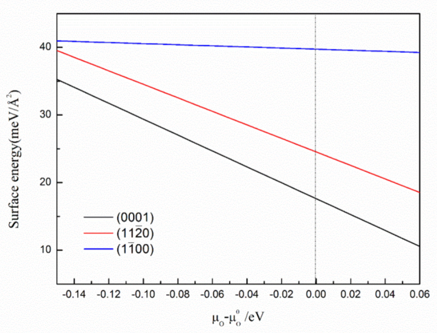

Density Functional Theory (DFT) - Equilibrium phase diagrams
The equilibrium shape of crystal can be determined from Wulff construction based on minimized surface Gibbs free energy, as the Gibbs-Wulff theorem states that, the length of a vector drawn normal to a crystal face will be proportional to its surface energy.
Li2O2: surface energies of different orientations as a function of oxygen chemical potential; the Wulff structure under 300 K and 1 atm. (Ref: Shi et al., Phys. Chem. Chem. Phys., 2015)
Li3O4: surface energies of different orientations as a function of oxygen chemical potential; the Wulff structure under 300 K and 1 atm. (Ref: Shi et al., Phys. Chem. Chem. Phys., 2015)

RuO2: surface energies of different orientations as a function of oxygen chemical potential; the Wulff structure under 300 K and 1 atm. (Ref: Shi et al., J. Phys. Chem. C, 2016)